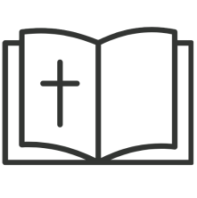

基督教會
宗旨
1
致力遵守及傳揚聖經的純正信仰
2
服務人群及為社會工作
3
推動及組織信仰上或慈善之活動，包括：聖經研究班、崇拜、學習班和興趣小組
歷史
華富基督教會在1968年成立。當時灣仔基督教會一位姊妹遷入剛落成的華富村，起初她在家中聚會，後來則申請了華基樓618及619室作聚會之用，華富基督教會就慢慢建立起來了。 華富基督教會是一間基督教會 (Church of Christ) 。1925年美國人 George S. Benson (班傳馨) 來港開荒，並組織了基督教會，初時稱為「基督會」，約三十年代改稱為「基督教會」。 早期基督教會的傳道工作由美國傳教士負責，其中在港時間最長並卒於香港的有E.L. Broaddus (白賚德) 及Elizabeth Bernard(包賴基)。這些傳教士並在廣州開辦了原道聖經學校 (Canton Bible School)，培養本地傳道人。可惜由於戰亂的緣故，這些工作已蕩然無存。
香港現存的基督教會是戰後由美國傳教士來港建立起來的，他們亦開辦過聖經學院，訓練本地傳道人。目前香港有四間基督教會，分別在華富、灣仔、旺角以及元朗聚會。 各基督教會完全獨立，但彼此常有聯絡。
(參考：基督教會在中國和香港的發展簡史)
影片
1970年代末的一次佈道會